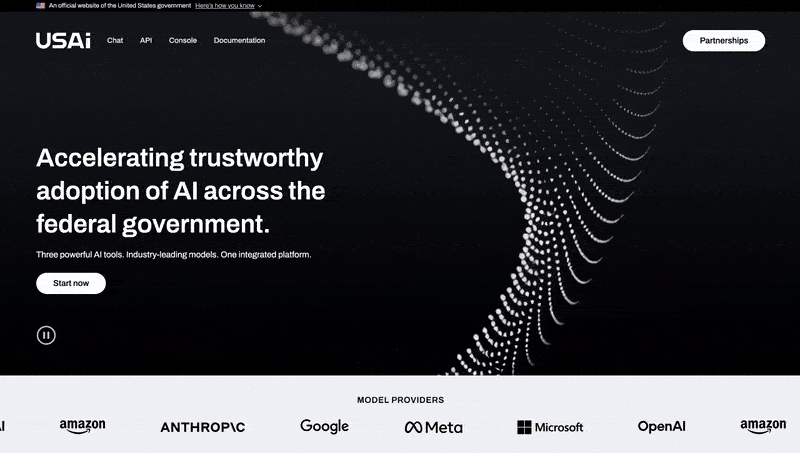
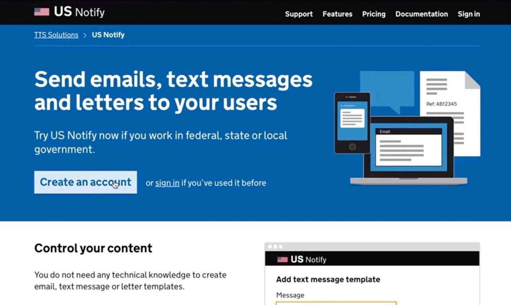

Jim is a multidisciplinary technologist, entrepreneur & former
civil servant. Co-Founder of YC-backed
ImpactiveImpactive, the folks behind the Vote Joe '20 Mobile Platform. Data &
Society Fulbright Scholar in Budapest. Guest lecturer on
artificial intelligence and civic tech at Carnegie Mellon. Lead
venture builder and principal engineer at 10x, the federal
government's only venture studio and the incubator of Login.gov,
Cloud.gov, Notify.gov, the US Web Design System and more.
Currently cofounder at Digital Public Ventures, a startup studio
focused on digital public infrastructure.
His work has won multiple awards and been written about in
books, magazines and blogs.
Impactive acquired by ActBlue 🤝
September 2025, Nationwide
Impactive, the organizing technology platform Jim
cofounded in 2017, was acquired by ActBlue, the leading
Democratic fundraising platform. The acquisition brings
together Impactive's suite of texting, phone banking,
relational organizing, and voter registration tools with
ActBlue's fundraising infrastructure, creating
comprehensive campaign technology for candidates and
causes at every level. Since its founding, Impactive has
powered over 2,000 candidates and NGOs. The combined
entity, now known as Impactive by ActBlue, will serve over
40,000 campaigns and NGOs, democratizing access to
professional-grade campaign tools regardless of budget or
team size. Jim is grateful to Impactive CEO Naseem
Makiya's dedicated vision and leadership. Jim's time at
Impactive strongly influenced his decision to enter public
service.
USAi.gov AI platform launches 🚀
August 2025, Nationwide

What began as a side project to create a
federally-compliant AI sandbox for 10x internal use in
June 2024 launched as a GSA agency-wide platform in March
2025. It has now launched as federal-wide shared AI
services platform at USAi.gov. This marked the
fastest-ever launch of a government-built digital shared
services platform. The open source platform offers
full-featured enterprise AI Chat, API and Evaluations
features with access to all flagship models from OpenAI,
Anthropic, Google, Meta and more at tokens-only pricing.
The platform’s launch was briefly delayed to allow OpenAI,
Anthropic and others to announce billion-dollar
concessions on their competing “per-seat” platform
products.
10x launches GSAi platform 🚢
March 2025, Nationwide
As lead venture builder and principal software engineer,
Jim helped 10x turn an internal sandbox into a
federally-compliant, enterprise-ready fork of the popular,
fast-moving open source AI interface open-webui. The team
delivered stability and security improvements, a
gov-compliant CI/CD pipeline, as well as feature
improvements to enable rapid prototyping and validation of
government AI use cases by mixed teams of
program/policy/tech/compliance experts. The 10x is also
building out open source evaluations tooling for
continuous improvement and monitoring of guardrails and
model output quality to enable new AI products to meet
federal AI compliance standards. These tools will enable
the government to benefit fully from rapid advances in AI
product offerings without becoming “locked-in” to a small
number of vendors that prioritize government compliance.
Notify.gov launches out of 10x 🎉
2023, Nationwide

US Notify, a federal government technology platform that
helps US agencies overcome privacy and compliance barriers
to communicating with the public via SMS and email, has
launched from TTS’s 10x accelerator. The platform is
designed to address government barriers to adoption of
commercial tools for critical comms channels, particularly
SMS. Over the course of four months, Jim led a engineering
team that took US Notify from an investment pitch to a
pilotable shared service prototype for the federal
government, facing 2+ million internal customers. Jim
served as lead engineer/manager, assembled the team, and
evaluated candidate open source technologies. Ultimately,
the excellent work done by the UK Government Digital
Service allowed the team to leap-frog into high-value,
real-world testing within weeks. Notify launched into open
beta in 2023 and is live at beta.notify.gov.
Impactive app white-labeled as Vote Joe '20 🇺🇸
2019, Nationwide
Impactive scored a big win. Our technology platform was
white-labeled as the Vote Joe app and was the centerpiece
of the Biden Campaign’s 50-state, $100,000,000+ digital
organizing campaign, providing mission-critical digital
services to millions of people for both the 2019 primary
and 2020 general campaigns. Our platform became especially
relevant during the unprecedented challenge of getting out
the vote during a pandemic. The Impactive-branded version
of our app and platform was used by wide-range of both
partisan and non-partisan NGOs, including Vote.org,
VoteAmerica, Planned Parenthood, and presidential primary
candidates, including vice-president, Kamala Harris.
Largest-ever study of friend-to-friend voter mobilization
📋
2018, Nationwide
During the midterm election cycle in 2018, as Head of
Product at Impactive, Jim was responsible for the
experimental design of a randomized controlled trial with
tens of thousands of participants testing the
effectiveness of the Impactive platform’s core premise of
voter mobilization via digital messages from friends and
acquaintances. Impactive later convened a team of data
scientists from Columbia University to co-author a
scientific paper based on the data collected. The strength
of results demonstrated in the paper led directly to
winning multiple bids for presidential campaign contracts
the following year.